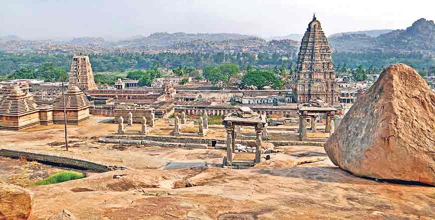

|  |
HampiBallari district, Karnataka, India Photo source:Google Hampi is an ancient village in the south Indian state of Karnataka. It’s dotted with numerous ruined temple complexes from the Vijayanagara Empire. On the south bank of the River Tungabhadra is the 7th-century Hindu Virupaksha Temple, near the revived Hampi Bazaar. A carved stone chariot stands in front of the huge Vittala Temple site. Southeast of Hampi, Daroji Bear Sanctuary is home to the Indian sloth bear. Other images of hampi
|